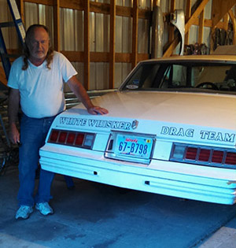

Bob Funk is an awesome dad, husband, brother, friend,
nice guy, and a hard worker. He grew up in Sutherland,
Nebraska and was the youngest of six boys. When he was
a teen he was sent to take care of his grandmother in Wallace,
Nebraska. In his early twenties he moved to North Platte,
Nebraska and worked for North Platte Hydroelectric Plant.
Not long after that he went to work for Nebraska Public Power.
Bob’s dad and two other brothers went to work for the railroad
and he decided he would do the same. So in his mid to late
twenties he moved to Hyannis, Nebraska and worked for
Burlington Northern Santa Fe. He worked for the crews for a
while and then in the mid 1980’s he decided to apply for a
signal electronic technician job in McCook, Nebraska.
He was hired for the job and retired after thirty years of
hard work.
He currently lives just outside of McCook, Ne and works part
time for O’Reilly Auto Parts. While he might be slowing down
physically these days, mentally he is still sharp as a tack.
I once asked his brother Charles what he thought of him,
his response was short, but it was absolutely brilliant,
“Bob has more knowledge in his pinky than most people do in
their entire bodies.”

Bob's 1978 Monte Carlo
Hobbies
He has a few hobbies that occupy his time.
One of them is ham radio. He has been into amateur radio for
a long time now and his call sign is KA0PKC. He has a room
full of radio’s that he knows all about. His other hobby
is cars. His pride and joy is a 1967 Ford Mustang Fastback
with a 390 engine that he built and installed himself. He
bought the car in 1966 and has owned it since. He spends
his summers taking the car to car shows around Nebraska and
Kansas. Not only does he own that car, but he also owns a
1981 Corvette, a 1994 Jaguar, a 1986 and a 1978 Monte Carlo.
He also spends his summers drag racing his ‘78 Monte Carlo.
The man is 74 years old and still gets out there and drag races.
Photo of BNSF Train Courtesy of Unsplash.com
Career
Bob worked for Burlington Northern Santa Fe for thirty years until
he retired in 2005.
He first started working as a crew member up in Alliance, Nebraska. In the 1980's he took a job as a signal electronic
technician in McCook, Nebraska. He was on call 24/7 rain or shine. He covered the stretch of tracks from Wray, Colorado
to Hastings, Nebraska and made sure the signals were working properly. He was good at his job and never complained about
getting called out at 3 AM on occasions when the railroad would need him.
Photo of Bob with his three kids: Shane, Jason, and Karie
Family
Bob is the youngest of five brothers. His brother Keith passed away in 1976 and his brother Don
passed away in 1996.
Bob still has three brothers that are alive, Charles, Gary,
and Ed, but his parents have been gone
a while now. Bob has five children.
He has four sons, Shane, Jason, Aaron, and Zachary.
He has one favorite daughter named Karie and a wife named Joy.